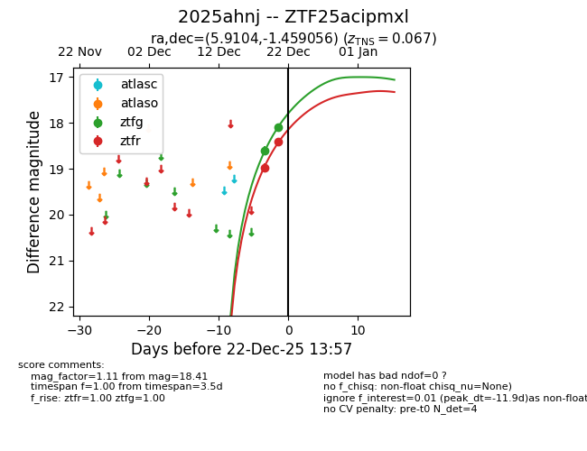
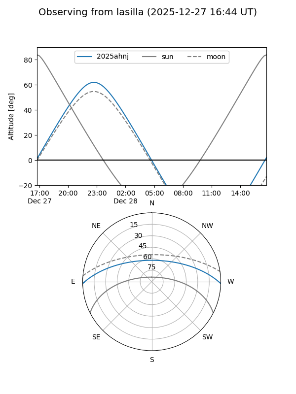
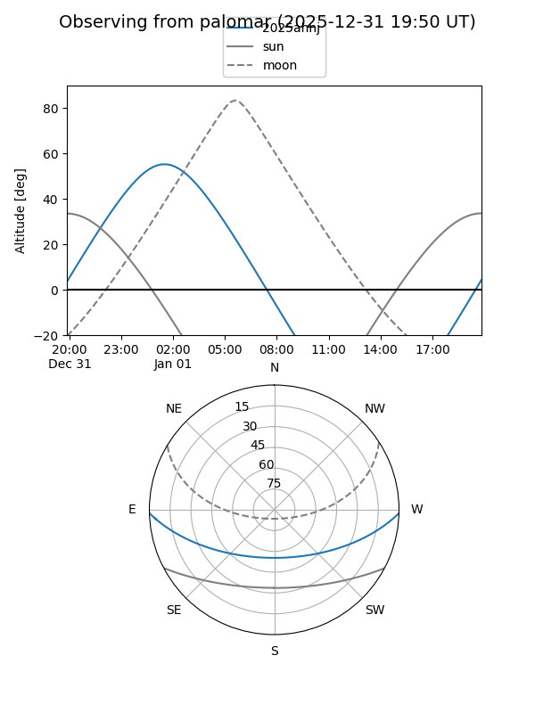
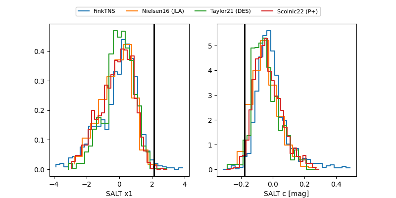

2025ahnj
Target 2025ahnj at 2025-12-21 10:57
Aliases and brokers:
FINK: fink-portal.org/ZTF25acipmxl
Lasair: lasair-ztf.lsst.ac.uk/objects/ZTF25acipmxl
ALeRCE: alerce.online/object/ZTF25acipmxl
TNS: wis-tns.org/object/2025ahnj
YSE: ziggy.ucolick.org/yse/transient_detail/2025ahnj
alt names
ZTF25acipmxl (ztf,fink_ztf)
2025ahnj (tns,yse)
Coordinates:
equatorial (ra, dec) = 5.9104,-1.45906
equatorial (HMS+DMS) = 00:23:38.50,-01:27:32.60
galactic (l, b) = (107.2160,-63.47946)
Flags:
Photometry:
last ztfg=18.10, ztfr=18.41
2 ztfg, 2 ztfr detections
Lightcurve

Visibility


Additional plots
